3.5 集合类型
博客首页，文章页面，评论页面„„眼看着博客逐渐成型，小白的心情也是越来越好。时间已经到了深夜，小白却还陶醉于编码之中。不过一个他无法解决的问题最终还是让他不得不提早睡觉去：小白不知道该怎么在Redis中存储文章标签（tag）。他想过使用散列类型或列表类型存储，虽然都能实现，但是总觉得颇有不妥，再加上之前几天领略了 Redis的强大功能后，小白相信一定有一种合适的数据类型能满足他的需求。于是小白给宋老师发了封询问邮件后就睡觉去了。
转天一早就收到了宋老师的回复：
你很善于思考嘛！你想的没错，Redis 有一种数据类型很适合存储文章的标签，它就是集合类型。
集合的概念高中的数学课就学习过。在集合中的每个元素都是不同的，且没有顺序。一个集合类型（set）键可以存储至多232 −1个（相信这个数字对大家来说已经很熟悉了）字符串。
集合类型和列表类型有相似之处，但很容易将它们区分开来，如表3-4所示。
表3-4 集合类型和列表类型对比
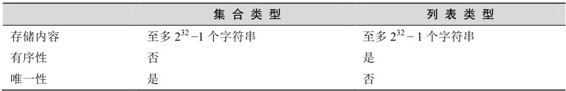
集合类型的常用操作是向集合中加入或删除元素、判断某个元素是否存在等，由于集合类型在Redis内部是使用值为空的散列表（hash table）实现的，所以这些操作的时间复杂度都是O(1)。最方便的是多个集合类型键之间还可以进行并集、交集和差集运算，稍后就会看到灵活运用这一特性带来的便利。
1．增加/删除元素
SADD key member [member …]
SREM key member [member …]
SADD 命令用来向集合中增加一个或多个元素，如果键不存在则会自动创建。因为在一个集合中不能有相同的元素，所以如果要加入的元素已经存在于集合中就会忽略这个元素。本命令的返回值是成功加入的元素数量（忽略的元素不计算在内）。例如：
redis> SADD letters a
(integer) 1
redis> SADD letters a b c
(integer) 2
第二条SADD命令的返回值为2是因为元素“a”已经存在，所以实际上只加入了两个元素。
SREM命令用来从集合中删除一个或多个元素，并返回删除成功的个数，例如：
redis> SREM letters c d
(integer) 1
由于元素“d”在集合中不存在，所以只删除了一个元素，返回值为1。
2．获得集合中的所有元素
SMEMBERS key
SMEMBERS命令会返回集合中的所有元素，例如：
redis> SMEMBERS letters
1) "b"
2) "a"
3．判断元素是否在集合中
SISMEMBER key member
判断一个元素是否在集合中是一个时间复杂度为O(1)的操作，无论集合中有多少个元素，SISMEMBER命令始终可以极快地返回结果。当值存在时 SISMEMBER命令返回1，当值不存在或键不存在时返回0，例如：
redis> SISMEMBER letters a
(integer) 1
redis> SISMEMBER letters d
(integer) 0
4．集合间运算
SDIFF key [key „]
SINTER key [key „]
SUNION key [key „]
接下来要介绍的3个命令都是用来进行多个集合间运算的。
（1）SDIFF命令用来对多个集合执行差集运算。集合A与集合B的差集表示为A−B，代表所有属于A且不属于B的元素构成的集合（如图3-13所示），即A−B ={x | x∈A且x∈B}。例如：
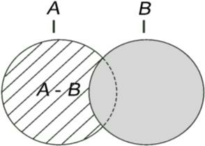
图3-13 斜线部分表示的是A−B
{1, 2, 3} - {2, 3, 4} = {1}
{2, 3, 4} - {1, 2, 3} = {4}
SDIFF命令的使用方法如下：
redis> SADD setA 1 2 3
(integer) 3
redis> SADD setB 2 3 4
(integer) 3
redis> SDIFF setA setB
1) "1"
redis> SDIFF setB setA
1) "4"
SDIFF命令支持同时传入多个键，例如：
redis> SADD setC 2 3
(integer) 2
redis> SDIFF setA setB setC
1) "1"
计算顺序是先计算 setA - setB，再计算结果与 setC的差集。
（2）SINTER命令用来对多个集合执行交集运算。集合A与集合B的交集表示为A ∩ B，代表所有属于A 且属于B的元素构成的集合（如图3-14所示），即A ∩ B ={x | x ∈ A 且x ∈B}。例如：
{1, 2, 3} ∩ {2, 3, 4} = {2, 3}
SINTER命令的使用方法如下：
redis> SINTER setA setB
1) "2"
2) "3"
SINTER命令同样支持同时传入多个键，如：
redis> SINTER setA setB setC
1) "2"
2) "3"
（3）SUNION命令用来对多个集合执行并集运算。集合A与集合B的并集表示为A∪B，代表所有属于A 或属于B的元素构成的集合（如图3-15所示）即A∪B ={x | x∈A或x ∈B}。例如：
{1, 2, 3} ∪{2, 3, 4} = {1, 2, 3, 4}
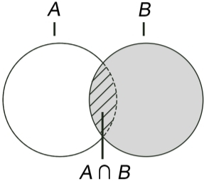
图3-14 图中斜线部分表示A ∩ B
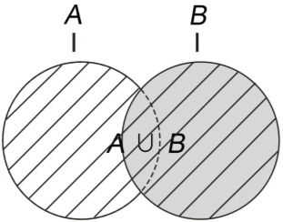
图3-15 图中斜线部分表示A ∪ B
SUNION命令的使用方法如下：
redis> SUNION setA setB
1) "1"
2) "2"
3) "3"
4) "4"
SUNION命令同样支持同时传入多个键，例如：
redis> SUNION setA setB setC
1) "1"
2) "2"
3) "3"
4) "4"
1．存储文章标签
考虑到一个文章的所有标签都是互不相同的，而且展示时对这些标签的排列顺序并没有要求，我们可以使用集合类型键存储文章标签。
对每篇文章使用键名为post:文章ID:tags的键存储该篇文章的标签。具体操作如伪代码：
# 给 ID 为 42 的文章增加标签：
SADD post:42:tags, 闲言碎语, 技术文章, Java
# 删除标签：
SREM post:42:tags, 闲言碎语
# 显示所有的标签:
$tags = SMEMBERS post:42:tags
print $tags
使用集合类型键存储标签适合需要单独增加或删除标签的场合。如在 WordPress博客程序中无论是添加还是删除标签都是针对单个标签的（如图 3-16 所示），可以直观地使用SADD和SREM命令完成操作。
另一方面，有些地方需要用户直接设置所有标签后一起上传修改，图3-17所示是某网站的个人资料编辑页面，用户编辑自己的爱好后提交，程序直接覆盖原来的标签数据，整个过程没有针对单个标签的操作，并未利用到集合类型的优势，所以此时也可以直接使用字符串类型键存储标签数据。
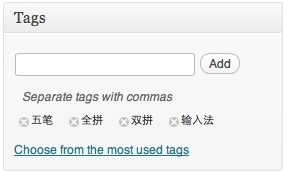
图3-16 在WordPress 中设置文章标签
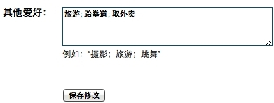
图3-17 在百度中设置个人爱好
之所以特意提到这个在实践中的差别是想说明对于 Redis 存储方式的选择并没有绝对的规则，比如 3.4 节介绍过使用列表类型存储访客评论，但是在一些特定的场合下散列类型甚至字符串类型可能更适合。
2．通过标签搜索文章
有时我们还需要列出某个标签下的所有文章，甚至需要获得同时属于某几个标签的文章列表，这种需求在传统关系数据库中实现起来比较复杂，下面举一个例子。
现有3张表，即posts、tags和posts_tags，分别存储文章数据、标签、文章与标签的对应关系。结构分别如表3-5、表3-6、表3-7所示。
表3-5 posts 表结构
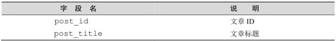
表3-6 tags 表结构
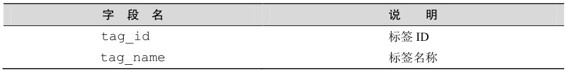
表3-7 posts_tags 表结构
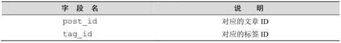
为了找到同时属于“Java”、“MySQL”和“Redis”这3个标签的文章，需要使用如下的SQL语句：
SELECT p.post_title
FROM posts_tags pt,
posts p,
tags t
WHERE pt.tag_id = t.tag_id
AND (t.tag_name IN ('Java', 'MySQL', 'Redis'))
AND p.post_id = pt.post_id
GROUP BY p.post_id HAVING COUNT(p.post_id)=3;
可以很明显看到这样的 SQL 语句不仅效率相对较低，而且不易阅读和维护。而使用Redis可以很简单直接地实现这一需求。
具体做法是为每个标签使用一个名为tag:标签名称:posts的集合类型键存储标有该标签的文章ID列表。假设现在有3篇文章，ID分别为1、2、3，其中ID为1的文章标签是“Java”，ID 为 2 的文章标签是“Java”、“MySQL”，ID 为 3 的文章标签是“Java”、“MySQL”和“Redis”，则有关标签部分的存储结构如图3-18所示[12] 。
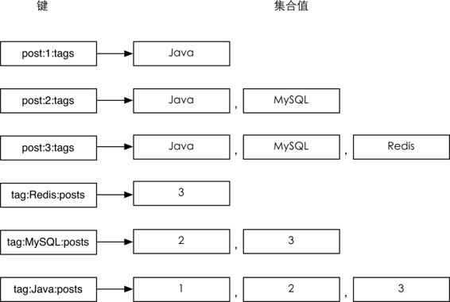
图3-18 和标签有关部分的存储结构
最简单的，当需要获取标记“MySQL”标签的文章时只需要使用命令 SMEMBERS tag:MySQL:posts即可。如果要实现找到同时属于Java、MySQL和Redis 3 个标签的文章，只需要将tag:Java:posts、tag:MySQL:posts和tag:Redis:posts这3个键取交集，借助SINTER命令即可轻松完成。
1．获得集合中元素个数
SCARD key
SCARD命令用来获得集合中的元素个数，例如：
redis> SMEMBERS letters
1) "b"
2) "a"
redis> SCARD letters
(integer) 2
2．进行集合运算并将结果存储
SDIFFSTORE destination key [key …]
SINTERSTORE destination key [key …]
SUNIONSTORE destination key [key …]
SDIFFSTORE命令和SDIFF命令功能一样，唯一的区别就是前者不会直接返回运算结果，而是将结果存储在destination键中。
SDIFFSTORE命令常用于需要进行多步集合运算的场景中，如需要先计算差集再将结果和其他键计算交集。
SINTERSTORE和SUNIONSTORE命令与之类似，不再赘述。
3．随机获得集合中的元素
SRANDMEMBER key [count]
SRANDMEMBER命令用来随机从集合中获取一个元素，如：
redis> SRANDMEMBER letters
"a"
redis> SRANDMEMBER letters
"b"
redis> SRANDMEMBER letters
"a"
还可以传递count参数来一次随机获得多个元素，根据count的正负不同，具体表现也不同。
（1）当count为正数时，SRANDMEMBER会随机从集合里获得count个不重复的元素。如果count的值大于集合中的元素个数，则SRANDMEMBER会返回集合中的全部元素。
（2）当count为负数时，SRANDMEMBER会随机从集合里获得|count|个的元素，这些元素有可能相同。
为了示例，我们先在letters集合中加入两个元素：
redis> SADD letters c d (integer) 2
目前 letters 集合中共有“a”、“b”、“c”、“d”4 个元素，下面使用不同的参数对SRANDMEMBER命令进行测试：
redis> SRANDMEMBER letters 2
1) "a"
2) "c"
redis> SRANDMEMBER letters 2
1) "a"
2) "b"
redis> SRANDMEMBER letters 100
1) "b"
2) "a"
3) "c"
4) "d"
redis> SRANDMEMBER letters -2
1) "b"
2) "b"
redis> SRANDMEMBER letters -10
1) "b"
2) "b"
3) "c"
4) "c"
5) "b"
6) "a"
7) "b"
8) "d"
9) "b"
10) "b"
细心的读者可能会发现 SRANDMEMBER 命令返回的数据似乎并不是非常的随机，从SRANDMEMBER letters -10这个结果中可以很明显地看出这个问题（b 元素出现的次数相对较多[13] ），出现这种情况是由集合类型采用的存储结构（散列表）造成的。散列表使用散列函数将元素映射到不同的存储位置（桶）上以实现O(1)时间复杂度的元素查找，举个例子，当使用散列表存储元素b时，使用散列函数计算出b的散列值是0，所以将b存入编号为0的桶（bucket）中，下次要查找b时就可以用同样的散列函数再次计算b的散列值并直接到相应的桶中找到 b。当两个不同的元素的散列值相同时会出现冲突，Redis 使用拉链法来解决冲突，即将散列值冲突的元素以链表的形式存入同一桶中，查找元素时先找到元素对应的桶，然后再从桶中的链表中找到对应的元素。使用SRANDMEMBER命令从集合中获得一个随机元素时，Redis首先会从所有桶中随机选择一个桶，然后再从桶中的所有元素中随机选择一个元素，所以元素所在的桶中的元素数量越少，其被随机选中的可能性就越大，如图3-19所示。
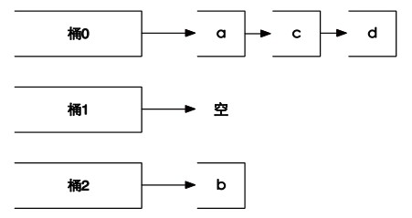
图3-19 Redis 会先从3 个桶中随机挑一个非空的桶，然后再从桶中随机选择一个元素，所以选中元素b的概率会大一些
4．从集合中弹出一个元素
SPOP key
3.4节中我们学习过LPOP命令，作用是从列表左边弹出一个元素（即返回元素的值并删除它）。SPOP命令的作用与之类似，但由于集合类型的元素是无序的，所以 SPOP命令会从集合中随机选择一个元素弹出。例如：
redis> SPOP letters
"b"
redis> SMEMBERS letters
1) "a"
2) "c"
3) "d"